Yanımdakiler
Kampanyamıza adıyla, profiliyle destek olan vatandaşlar. Bu yolda yalnız değiliz; bilim, hukuk, sanat ve sivil toplumdan birçok isim bu hareketin yüzü oluyor.
Birlikte Yola Çıktıklarım
Soyada göre alfabetik sıralı.
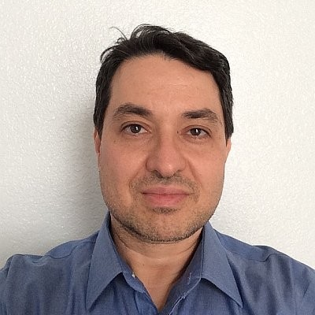
Kürşad Albayraktaroğlu (Dr.)
Mikroişlemci Tasarım Mühendisi · Intel (NEX, Network & Edge Group)
Austin, Teksas, ABD
🎓 Lisans: Bilkent Üniversitesi, Elektrik-Elektronik Mühendisliği · Yüksek Lisans ve Doktora: Maryland Üniversitesi, College Park
Mikroişlemci ve sistem yongası (SoC) ön-uç sayısal tasarımı üzerine çalışan donanım mühendisi; RTL tasarımı, doğrulama ve donanım güvenliği vurgulu bilgisayar mimarisi alanlarında deneyim sahibi.
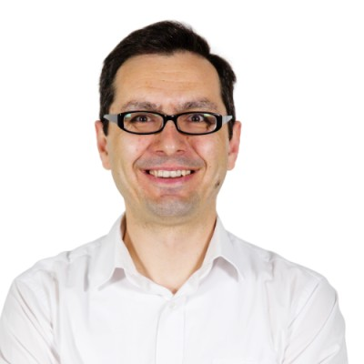
Nart Bedin Atalay (Prof. Dr.)
Öğretim Üyesi · TOBB ETÜ, Psikoloji Bölümü
Ankara, Türkiye
🎓 Lisans: Hacettepe Üniversitesi, Müzikoloji · Yüksek Lisans ve Doktora: ODTÜ, Bilişsel Bilim · Konuk Doktora Araştırmacısı: Jyväskylä Üniversitesi (Finlandiya), Müzik Algısı ve Bilişi
Dikkat, otomatiklik, bilişsel kontrol ve müzik tonalite algısı üzerine çalışan akademisyen.
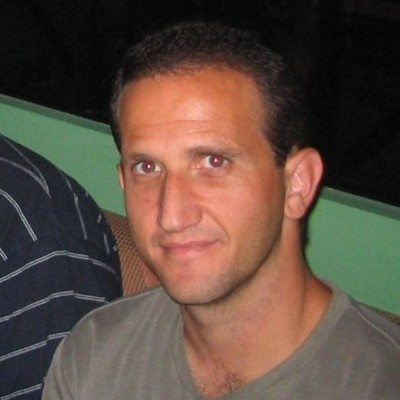
Cemil Azizoğlu (Dr.)
Kıdemli Mühendis (Principal Member of Technical Staff) · AMD
San Antonio, ABD
🎓 Lisans: ODTÜ, Bilgisayar Mühendisliği · Yüksek Lisans: University of North Texas · Doktora: UC Santa Barbara
AMD'de GPU firmware ve sistem yazılımı üzerine çalışan kıdemli mühendis. Donanıma yakın yazılım, mikrokod ve grafik işlemci mimarisi alanlarında uzun yıllık deneyime sahip.
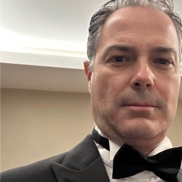
Zafer Can Bilgin
Yönetim Kurulu Başkanı · Türk Teknik Taahhüt A.Ş.
Ankara, Türkiye
🎓 Lisans: İstanbul Teknik Üniversitesi, İnşaat Mühendisliği
Mühendis kökenli iş insanı. Türk Teknik Taahhüt A.Ş. başta olmak üzere mühendislik, elektrik ve sanayi alanında birden fazla şirkette yönetim ve sahiplik üstleniyor. 30 yılı aşkın sektör deneyimi.
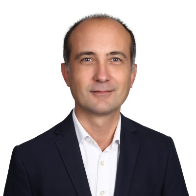
Ali Bozbey (Prof. Dr.)
Öğretim Üyesi · TOBB ETÜ, Elektrik-Elektronik Mühendisliği · Phi0 Quantum Technologies
Ankara, Türkiye
🎓 Lisans, Yüksek Lisans ve Doktora: Bilkent Üniversitesi, Elektrik-Elektronik Mühendisliği · Doktora Sonrası: Nagoya Üniversitesi (Japonya), Kuantum Mühendisliği
Süperiletken kuantum elektroniği üzerine 2008'den bu yana TOBB ETÜ'de araştırma yürüten akademisyen; Türkiye'nin ilk yerli kuantum bilgisayarı QuanT'ın geliştirilmesinde başrol oynadı. Süperiletken entegre devre, Josephson dinamiği ve bolometre alanlarındaki çalışmaları 3.100'ü aşkın atıf aldı.
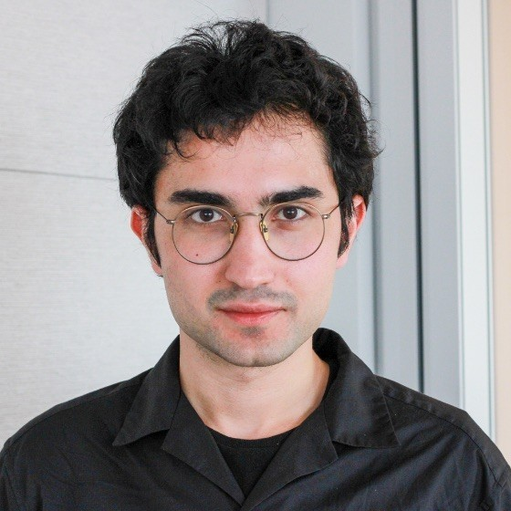
Melihcan Erol (Dr.)
Yapay Zekâ Araştırmacısı · Meta
Seattle, Washington, ABD
🎓 Lisans: Bilkent Üniversitesi, Elektrik-Elektronik Mühendisliği · Doktora: MIT, Elektrik Mühendisliği ve Bilgisayar Bilimleri (EECS)
Yapay zekâ alanında çalışan araştırmacı. Üniversite giriş sınavında Türkiye birincisi olduktan sonra Bilkent Üniversitesi Elektrik-Elektronik Mühendisliği bölümünü tamamladı; ardından MIT'de karşılaştırmalı öğrenme (contrastive learning) üzerine doktorasını bitirdi. Meta'da yapay zekâ araştırmacısı olarak çalışıyor.
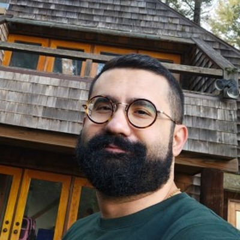
Çağrı Eryılmaz
Sistem ve SoC Mimarisi Mühendisi · Intel Corporation
San Francisco, Kaliforniya, ABD
🎓 Lisans: ODTÜ, Elektrik-Elektronik Mühendisliği · Yüksek Lisans: Texas Üniversitesi, Austin · Konuk Araştırmacı: Barselona Süperbilgisayar Merkezi
Heterojen bilgisayar mimarileri, bellek sistemleri, hata-toleranslı hesaplama ve VLSI alanlarında çalışan donanım mühendisi; makine öğrenmesi donanımı ve bellek-içi hesaplama üzerine 2 patent sahibi. 2018 Intel Division Recognition Award.
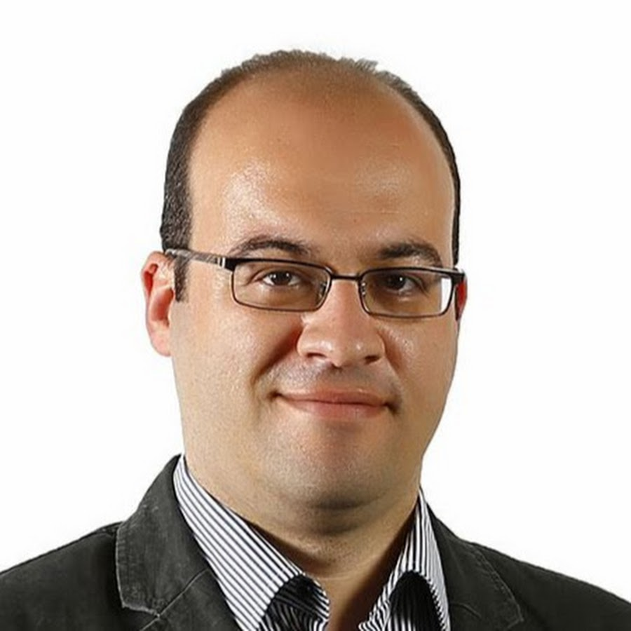
Tolga Girici (Prof. Dr.)
Öğretim Üyesi · Middlesex Üniversitesi (Londra)
Londra, Birleşik Krallık
🎓 Lisans: ODTÜ, Elektrik-Elektronik Mühendisliği · Doktora: Maryland Üniversitesi, College Park
Telekomünikasyon ve kablosuz haberleşme üzerine çalışan akademisyen; ağ kaynak tahsisi ve mobil ağlar alanlarındaki çalışmalarıyla tanınıyor. 2007-2024 arası TOBB ETÜ Elektrik-Elektronik Mühendisliği Bölümü'nde profesör olarak görev yaptı; 2016-2024 arası bölüm başkanlığını yürüttü.
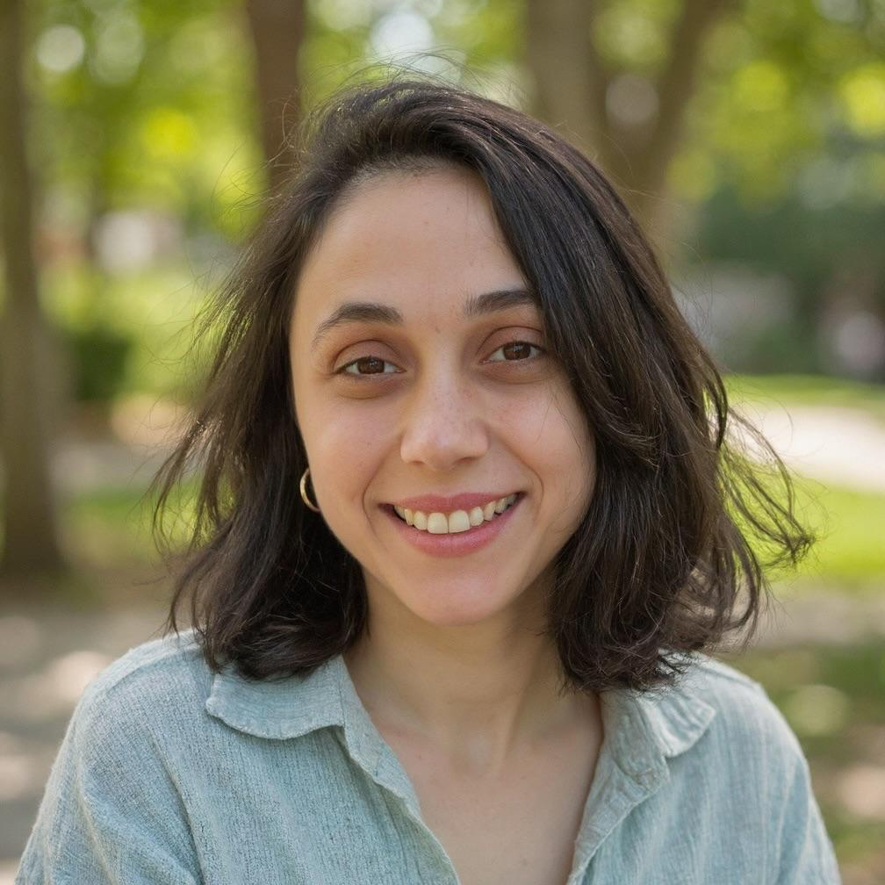
Meltem Özsoy (Dr.)
Kıdemli Araştırmacı · Intuitive (Da Vinci cerrahi robot şirketi)
Kaliforniya, ABD
🎓 Lisans: TOBB ETÜ, Bilgisayar Mühendisliği · Doktora: Binghamton Üniversitesi (SUNY), Bilgisayar Bilimi
Bilgisayar mimarisi ve donanım güvenliği üzerine çalışan araştırmacı; donanım tabanlı izolasyon (Iso-X), zararlı yazılım tespiti ve dallanma denetimi (branch regulation) gibi çalışmalarıyla tanınıyor. Intuitive'den önce Intel'de araştırmacı olarak görev yaptı.
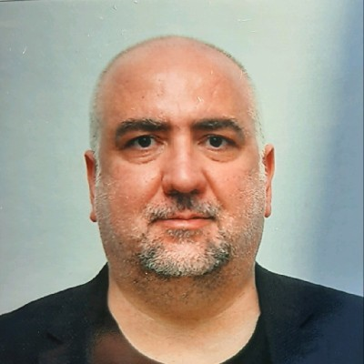
Mehmet Sankır (Prof. Dr.)
Öğretim Üyesi · TOBB ETÜ, Malzeme Bilimi ve Nanoteknoloji Mühendisliği Bölümü
Ankara, Türkiye
🎓 Lisans: ODTÜ, Kimya · Doktora: Virginia Tech, Kimya Mühendisliği
Enerji ve su uygulamaları için işlevsel membran ve nanoyapı geliştirme üzerine çalışan akademisyen; yakıt hücreleri, fotoelektrokimyasal hidrojen üretimi ve süperkapasitörler alanlarındaki 100'ü aşkın yayınıyla tanınıyor. Yeşil Hidrojen Derneği Başkanı; WILEY-Scrivener kitap serisi editörü.
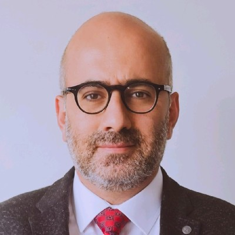
Serkan Ünal (Doç. Dr.)
Öğretim Üyesi · Ufuk Üniversitesi
Ankara, Türkiye
🎓 Lisans: Boğaziçi Üniversitesi, İnşaat Mühendisliği · Yüksek Lisans: TOBB ETÜ (MBA) · Doktora: Ufuk Üniversitesi
Kurumsal yönetim, davranışsal finans, hisse senedi piyasaları ve portföy yönetimi üzerine çalışan akademisyen. 2022'de doçentlik unvanını alan Ünal, 15 yılı aşkın Borsa İstanbul deneyimiyle uzun vadeli değer yatırımı analizleri kaleme alır; YouTube üzerinden finansal eğitim içerikleri üretir.

Abdullah Giray Yağlıkçı (Dr.)
Öğretim Üyesi · CISPA Helmholtz Bilgi Güvenliği Merkezi
Saarbrücken, Almanya
🎓 Lisans: TOBB ETÜ, Elektrik-Elektronik Mühendisliği · Doktora: ETH Zürich
Bilgisayar mimarisi ve donanım güvenliği üzerine çalışan araştırmacı. DRAM güvenliği ve RowHammer alanlarındaki katkılarıyla tanınıyor.
Adıyla Destek Veren Vatandaşlar
Soyada göre alfabetik sıralı.
Adıyla Destek Veren Diğer Vatandaşlar
LinkedIn profili paylaşmamış ama adıyla destek bildiren vatandaşlarımız. Profil bağlantısı paylaşılırsa yukarıdaki kartlı listeye geçer.
Arkamızda Kimler Var
Bu sayfada adıyla destek bildiren isimler, çok daha geniş bir topluluğun yalnızca görünür yüzü. Kayıt formumuzu doldurmuş binlerce vatandaşımız var; aralarında şu profilden destekçiler bulunmakta:
Mühendislik
- 303 bilgisayar mühendisi
- 207 elektrik-elektronik mühendisi
- 91 yazılım mühendisi
- 56 makine mühendisi
- Türkiye'nin önde gelen savunma sanayii şirketlerinden teknik kadrolar (hassas pozisyonları gereği adları paylaşılmıyor)
Akademi
- 50 öğretim üyesi
- 22 doktora öğrencisi ve araştırma görevlisi
- 438 lisans ve yüksek lisans öğrencisi
Diğer alanlar
- 178 yazılım ve bilişim uzmanı
- 26 hekim, 25 sağlık çalışanı
- 27 öğretmen
- 22 sanatçı ve yazar
- 13 mimar
- 9 hukukçu
Coğrafya
- 24 ülkeden yurt dışı destekçi
- Türkiye'nin pek çok ilinden, Ankara, İstanbul, İzmir, Bursa, Kocaeli, Eskişehir, Konya, Antalya, Kayseri, Sakarya başta olmak üzere
Yaş profili
- %86'sı 18-44 yaş arası, genç ve dinamik bir hareket
Bu sayfada adıyla yer alan isimler ve yukarıdaki kategoriler dışında, kamusal görünürlük tercihleri farklı olan birçok akademisyen, hukukçu, sanatçı, mühendis ve sivil toplum gönüllüsü de kampanyaya destek vermektedir. Adlarını gizli tutma tercihlerine saygı duyuyoruz.